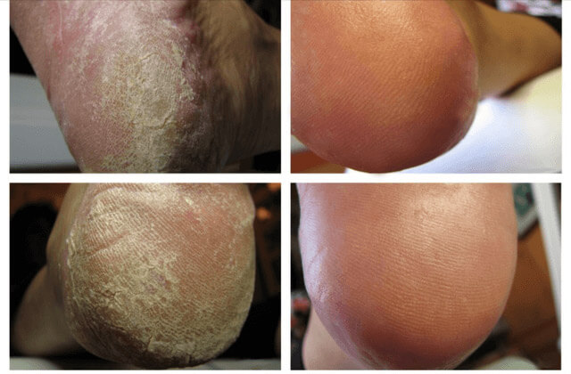

Сегодня мы с подругой купили билеты на море. В этот раз летим на 2 недели на Крит. Но пост мой будет посвящен не путешествию, а очень деликатной и стыдной проблеме, которая особенно явной становится именно в отпуске. Это — грибок.
Да-да, теперь я могу честно признаться: у меня был грибок. Грибок стопы и немного затронуты ногти. И, как оказалось, это не просто косметическая проблема, это настоящее инфекционное заболевание, прогрессирующее и очень плохо поддающееся лечению. Но расскажу все по порядку.
Прошлым летом мы с подругой отдыхали в Испании. Мы обе в разводе, дети взрослые, поэтому и отдыхать ездим вдвоем, как в студенческие времена. Мы дружим с 17 лет, не разлей вода. И на отдыхе у нас и шампунь общий, и зубная паста… Чтоб не тащить лишнего в багаже. Да и платьем или футболкой можем поменяться, в общем, как сестры.
И вот, уже под конец нашего отдыха, моя подруга, уходя с пляжа, забыла там свои шлепанцы. И вечером сокрушалась, что не в чем в душ сходить. А я как раз из душа только вернулась и предложила ей надеть мои, ну что тут такого?
Неужели грибок — это так ужасно?
И тут Ира, моя лучшая подруга, скривилась так, будто я ей прокладку использованную предложила! И говорит: “Ты чтооо, у тебя же грибок дичайший! Ты ноги свои видела вообще? Как они у тебя еще не отвалились?!” Потом, конечно, попыталась перевести все в шутку, но разговаривать с ней я уже не хотела, обиделась жутко! Последние 2 дня отпуска мы провели, как малознакомые тетки, а в самолете даже не разговаривали, каждая уткнувшись в свою книжку.
Мне, конечно, было обидно и непонятно, почему она так отреагировала. Ну да, грибок, корочки между пальцев и пятки загрубевшие, но они ж даже не чешутся, он у меня давно! Да и вообще, он у всех есть, этот грибок, ну или почти у всех!
Дома все же решила почитать в интернете, чего ж такого ужасного в этом грибке. Оказалось, что зря я на подругу-то обиделась. Запущенный грибок и чешется ужасно, и кожа лопается, и заражение крови может быть, и бородавки на подошвах, и отслаивание ногтей! А каких ужасных фотографий насмотрелась! Оно ведь, когда у себя, так особо и не смотришь, на эти пятки, а вот на фото… Решила, что перед подругой надо извиниться и быстренько вылечить грибок, пока не поздно!
.jpg)
Вылечить грибок полностью — невозможно?
Быстренько вылечить, ха-ха-ха! Оказалось, что вылечить грибок практически невозможно! Я купила сначала одну мазь, потом вторую, третью — ничего не помогало; потом мне посоветовали в аптеке принимать флуконазол внутрь — тоже мимо; перепробовала и народные средства: уксус, перекись, йод… Только покажется, что стало лучше, как вскоре все возвращалось на круги своя!
Я так промучилась 5 месяцев, почти до самого нового года. Перед праздниками по знакомству записалась к хорошему дерматологу. Рассказала, сколько живу с грибком, чем лечусь, что ничего не помогает… Врач, конечно, пожурил меня за такое безответственное отношение к здоровью: знать, что у тебя грибок, и ничего не делать, надеясь, что само пройдет! Также доктор посмотрел на целый пакет противогрибковых мазей, кремов и гелей. которые я принесла с собой, и сказал, что их эффективность стремится к нулю, выкинутые деньги. Я возмутилась: “В аптеке же мне советовали! да и реклама идет, что значит, они не работают?”
Оказалось, что это “просто бизнес, ничего личного”: от грибка ведь не умирают, поэтому можно продавать за огромные деньги все новые и новые фуфломицины таким дурочкам, как я. Но с врачом мне все же повезло: он как раз недавно был на конференции в Германии и оттуда привез небольшую партию нового противогрибкового препарата, который в ходе лабораторных исследований показал 100% эффективность против всех видов грибка! После рассказа о фуфломицинах верилось слабо, но доктор сказал, что ручается лично и назначил прием ровно через месяц и попросил сделать фото моих стоп до лечения. Купила я препарат прямо у него, выложив приличную сумму (хотя, если посчитать, сколько денег за полгода я оставила в аптеках, то не так уж и критично).
Средство называлось Tinedol, выпускается в форме нежирной мази . Это минерально-щелочная мазь с микрочастицами жемчуга, она действует 24 часа после процедуры и напрочь убивает грибок за счет щелочной основы. Оказывается, грибок любит кислоту, а в щелочи- мгновенно погибает. Наносить средство на вымытые и высушенные стопы нужно было каждый вечер. И дать впитаться.
Приятно, что ни запаха специфического, как у большинства противогрибковых кремов, нет, ни жирности этой. Первые результаты я заметила где-то через дней 5-7: затянулись трещины на пятках, кожа сильно смягчилась. Еще через неделю и между пальцами все стало заживать, остались только пятнышки, это новая кожа росла.
 Надеюсь, никого не испугаю видом своих пяток. Фото после - это 3 недели ежедневных ванночек (через день терла ноги щеткой, но несильно и недолго)В общем и целом, через 14 дней, проявлений грибка на моих ножках уже не было. Но раз уж купила курс препарата на месяц, то месяц и использовала. Так кроме того, что грибок действительно ушел, сама кожа стала нежной, розовой, как у младенца! Ноги перестали потеть, даже в жаркой обуви, никакого запаха! Я теперь как принцесса!)))
Анализ подтвердил: от грибка стопы и ногтя
не осталось и следа!
Через месяц пошла к врачу, он взял соскоб на анализ — на грибок и намека не осталось! И еще рассказал, что у нас открылось официальное представительство компании-производителя Tinedol, и эту мазь можно заказать у них напрямую, без переплат, да еще и с доставкой! Мол, я первооткрывателем стала.
Я потом посмотрела на сайте и немного расстроилась: у них почти в 2 раза дешевле, чем я купила у самого доктора! Но главное-то, что у меня больше нет грибка! И никогда не будет!
Прошло уже почти полгода, мои ножки все такие же розовые и здоровенькие! А с Ирой мы, конечно, помирились, потом выложу отчет о нашей поездке на Крит! Я как раз прикупила новые босоножки, как вам?
А вот обувью меняться больше никогда ни с кем не буду! И вам не советую :)
P.S. Меня тут в комментариях и в личке разрывают на части с просьбой дать адрес сайта, где можно заказать эту мазь. Что ж, на здоровье! Там сейчас как раз акция, так что успеете избавиться от грибка до отпуска!
.jpg)
.jpg)
Комментарии: 12
Популярные
Светлана К.
Давно подписана на Ларису, интересно пишет. А главное, настоящая! Без лишнего лоска. Как есть, так и пишет.
2 дня назад
Олеся Грай
Как можно вообще с кем-то обувью делиться. Хоть подружки, хоть сестрички. Это так негигиенично! ФУ!!!
12 дней назад
Вероника
Вот все-таки здорово, что теперь про все блоггеры пишут. И про грибок, и про другие болезни. Потому что раньше как было. Сидит человек дома, грызет себя, винит за то что допрыгался до грибка (потому что признаемся, проблема деликатная, и не все понимают, что вины человека в ней нет – это болезнь, а не отсутствие гигиены или что-то вроде того). Не выходил человек из дома, никому рассказать не мог – стыдно же! И до депрессии себя доводил. А сейчас выйдет в интернет – а там оказывается с такой же проблемой толпы людей! И прямо легче становится. Еще и способы как справиться подскажут. Хорошо же.
1 месяц назад
Настасья Петровна
Конечно здорово! Скоро будут выкладывать фоточки отходов жизнедеятельности – поделиться, у кого какое. Интересно же – вдруг у меня такое же!
2 месяца назад
Ma_Lina
Лариса врать не станет) Всегда очень грамотно пишет и интересно. Пойду гляну, что там за крем, а то у мужа пятки похоже выглядят. Я думала, это просто потому что он их слабо трет… А тут, глядишь, я могу подхватить, ванная-то одна... Тем более, если пользовать можно под сериалы – смогу уговорить)))
2 месяца назад
Людмила
Моей маме два врача в разных клиниках выписывали эти пакетики от грибка. Заплатили им что ли?
2 дня назад
anananova
Ну почему столько негатива и злости у людей! Ну, появилось средство хорошее в стране! Ну, попробовали блоггеры и поделились с вами!! Испробовали на себе – чтобы вам рассказать! Это же их работа, вы ж для этого на них подписываетесь – читать, что они вам пишут! А уж если врачи рекомендуют! ДВА НЕЗАВИСИМЫХ ВРАЧА. У вас с логикой проблемы, похоже. Ну или лечитесь подорожником, че!))))))))))))))))
2 дня назад
Маргарита Озерская
Слышала про Tinedol от подружки, которая в Америке живет. Ей там тоже доктор посоветовал. И фотки показывала до и после (не в блоге – мне лично). Так что, всем неверующим могу показать)
1 месяц назад
DALIDOVICH
Ой люблю Ларисочку! Читаю ее всегда с удовольствием. Такая она честная, открытая, настоящая!
2 месяца назад
KOLPACHOK
Не знаю этот крем, но то, что грибок не лечится на раз-два – это точно! Я перепробовала все!!!! А ему хоть бы что, еще и чешется жутко! Пойду заказывать Tinedol. Я уже на все готова, только бы вернуть свои красивые ножки.
1 месяц назад
Маришка
А я уже заказала. Жду. Тоже заколебалась всю аптеку скупать. И толку никакого. Надеюсь, эта штуковина поможет. Ларису читаю давно – пока она меня не подводила.
12 дней назад
Светлана
Фууу, Лара, не ожидала такого поста!((
12 недель назад
Алина Новикова
Человек поделился своей бедой, поделился крутым средством, а вы такая вся стерильная и в белом пальто! Это на вас, уважаемая, фу!
3 дня назад